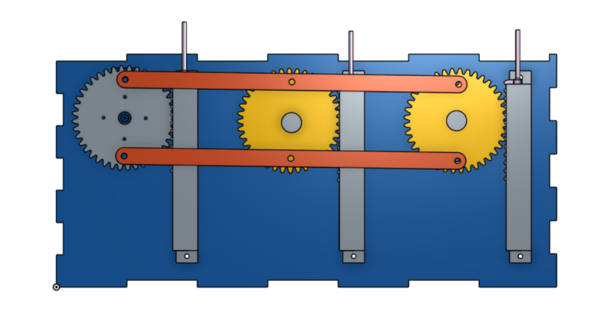
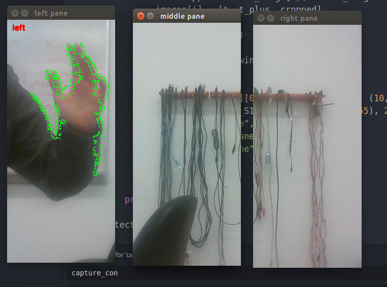

During our fourth and final sprint we expanded our motion detection code to work for six panes of motion, adding to the previous nine nodes to make a total of 18 origami nodes, and got our web application working for three input modes.
Web Application
During this sprint, we set up a web application run using a python-flask web application. The web application directs to a main page which describes our project generally. On the next page there is a simple interface where the user is able to choose between three different possible input modes: video, audio, or demo. One an input is chosen a python process to run the function which corresponds to the input mode chosen starts. We are then able to keep track of which input mode is currently running and make sure only one is running at a time. This also allows us to stop all processes when the user chooses that they want motion to be off.
Motion, Demo, and Video Modes
During this sprint, we modified our motion code from the previous sprint which was able to detect motion in 3 different sections of the camera's view to detect motion in 6 different sections. We did some research and chose to constructed our messages as lists of 0's and 1's to send to the Arduino to signify which of the six sections had motion in them. We also wrote up a demo mode that was able to send messages in the same format (so we could be running the same Arduino program) that signified different interesting patterns to move the origami nodes in. Additionally, we created an audio mode that sent messages in the same format telling the Arduino to move more nodes when there is a louder volume of noise.
Arduino Code
During this sprint, we had to rewrite our Arduino code to work with non continuous servos. We needed to keep track of what position each servo was at each time running through the Arduino code and which direction it was going in. We created flags for each servo to help us know what the current state of each servo was. We had a problem where our movement was slow and jerky because our Arduino code was looping through infrequently. To fix this, we used a function called read bytes to read bytes into a buffer from serial and set a timeout value so that it would not hang up our code. This made for much smoother and nicer servo movement resulting in an overall more aesthetic design.

Mechanical Design
During this sprint we manufactured and attached the remaining nine origami nodes and we decided to move from continuous servos to non continuous servos. Since our origami nodes have an inner structure and the outer structure is attached securely to the wooden base, when the origami structures are closed, there is a spring force pushing the origami structures back. This spring force becomes a problem when the servos are continuous, because the gear disengages from the rack to switch to the rack on top. When the origami structures are closed, the spring force pushes back on the rack when the gear is disengaged, misaligning the rack and pinion, and eventually causing the servos to stop. Thus, to avoid this problem, we went back to non continuous servos that move back and forth on the rack, staying engaged with the rack the entire time.